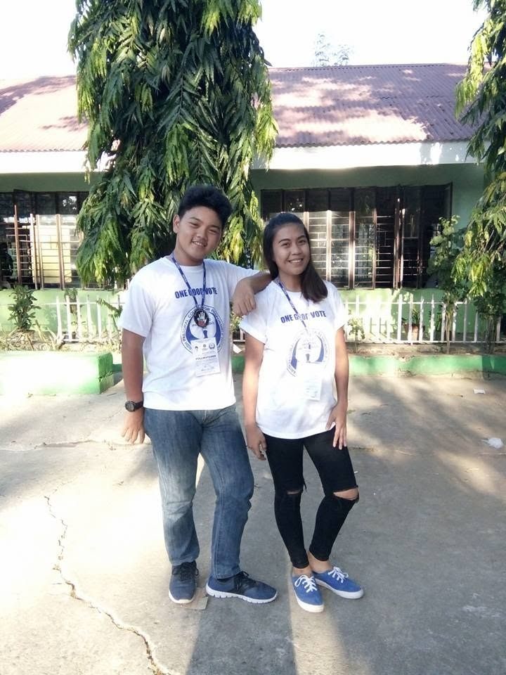
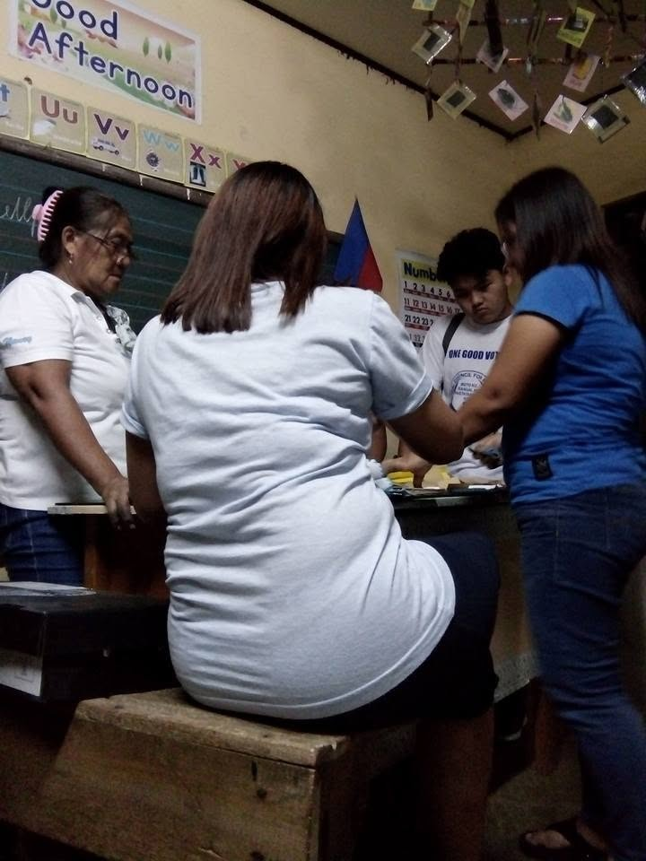

Reflections · Leadership & Development · Case
Leading Across Generations
I entered PPCRV at seventeen as a young volunteer. Three years later, I was asked to chair the parish organization. The responsibility came before seniority did. The work was learning how to become worthy of the trust that came with it.
Period: 2016–2022
Why this case matters
Leadership arrived before seniority did.
I joined the Parish Pastoral Council for Responsible Voting in 2016 at seventeen. I was young, but I was already eligible to serve as a voter-volunteer in the parish effort.
By 2019, I was serving as Parochial Chairperson. Many of the people I coordinated were much older than I was, including senior citizens who had already spent years serving the parish and the community.
Their trust changed how I understood leadership. I could not rely on age or seniority. I had to prepare, communicate clearly, listen when experience revealed something I had missed, and make decisions when the work required one.
Documentary record
From one polling site to parish-wide responsibility.
Photographs from the 2019 election cycle at Dalao Elementary School.


Case record
Responsibility expanded with each election cycle.
- Organization
- Parish Pastoral Council for Responsible Voting
- 2016 role
- Member and Public Assistance Desk volunteer
- 2016 station
- New San Jose Elementary School
- 2019 role
- Parochial Chairperson
- 2019 station
- Dalao Elementary School and roving logistics team
- Parish coverage
- New San Jose, Old San Jose, Dalao, Sta. Lucia, and Sapang Balas, with six chapels
- Leadership period
- 2019–2022
2016 · Age 17
I learned service from one station.
My first assignment was at the Public Assistance Desk in New San Jose Elementary School. The responsibility was specific and local: stay attentive to the people in front of me, help where I could, and learn how election-day service worked on the ground.
At seventeen, I was not entering the organization with authority. I was entering it with the opportunity to observe. I saw how older volunteers handled questions, solved practical problems, coordinated with one another, and remained present through a long day of public service.
That first experience gave me a useful starting point for leadership: before you can coordinate the whole, you have to understand what the work feels like at one station.
2019 · Chairperson
Three years later, I had to learn how to see the whole system.
In 2019, I became Parochial Chairperson. I was assigned at Dalao Elementary School while also working with the roving team handling logistics.
The parish served five barangays: New San Jose, Old San Jose, Dalao, Sta. Lucia, and Sapang Balas, together with six chapels. My attention could no longer stay with one desk or one polling site. I had to think about volunteers, movement, information, reporting, supplies, and what different locations needed at different times.
I also participated in the closing of ballot precincts and counting. Copies of election results moved through our parish reporting process to the Diocese of Balanga.
The shift was not simply from member to chairperson. It was from seeing one part of the work to being accountable for how many parts fit together.
2022 · Repeated responsibility
Leadership became something that had to hold up more than once.
By 2022, the most important lesson was no longer that I had once been trusted with a leadership role. It was that the responsibility had to survive another cycle.
Volunteer recruitment, information dissemination, coordination with the diocesan level, preparation and post-election reporting, and on-ground planning all required follow-through. Repetition exposed whether a process was actually reliable or whether it had only worked once because people improvised around it.
That made development less dramatic but more demanding. Leadership became the practice of remembering what worked, recognizing what did not, and building enough continuity that other people could do their part with greater clarity.
Leading across generations
Their experience did not become less important because I was chairperson.
Many of the volunteers I coordinated were much older than I was. Some had decades more life experience and a longer history of parish service.
I learned quickly that being the chairperson did not mean being the person who knew the most. In many situations, leadership meant knowing when to give direction and when to listen to someone whose experience revealed something I had not yet learned.
Their trust did not make my youth irrelevant. It made me more accountable for it.
I had to earn confidence through preparation, consistency, communication, and follow-through rather than through age.
Character → Reflections
Trust came before seniority. The responsibility was learning how to deserve it.
At seventeen, responsibility meant staying attentive to the voters in front of me. By 2019, it meant thinking across barangays, volunteers, polling locations, logistics, reports, and diocesan coordination.
Leadership became the ability to move between the detail and the whole without losing respect for the people carrying each part.
What I carry forward
Authority is not the same as superiority.
Being trusted young could easily have become a story about being exceptional for my age. What stayed with me instead was how much that trust depended on other people choosing to work with me.
Leadership was not proof that I had outgrown the need for guidance. It made listening, preparation, and accountability more important.
The older members did not make my youth irrelevant. Their trust made me more responsible for what I did with it.
Leadership & Development
Return to the wider engagement.
Explore more engagements about character, responsibility, learning, and how experience changes the way leadership is carried.
Leadership & Development →